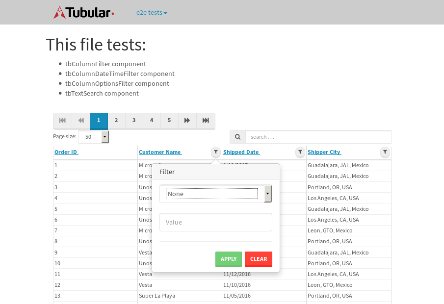

tbColumn.Grid Sorting - 20.871sTests: 5Skipped: 0Failures: 0 should sort data in ascending order then on descending order when sorting by Order Id column - 4.47sTests passed: 100.00%should order data in ascending order when click-sorting an unsorted text column - 3.56sTests passed: 100.00%should order data in descending order when click-sorting an ascending-sorted text column - 4.369sTests passed: 100.00%should order data in ascending order when click-sorting an unsorted date column - 3.834sTests passed: 100.00%should order data in descending order when click-sorting twice an unsorted date column - 4.636sTests passed: 100.00%
tbEmptyForm - 1.857sTests: 3Skipped: 0Failures: 0 should have an empty required field - 0.239sTests passed: 100.00%should not be able to click on save - 0.02sTests passed: 100.00%should load default value for numeric field - 0.025sTests passed: 100.00%
Tubular Filters.tbColumnFilter - 108.753sTests: 12Skipped: 0Failures: 1 should cancel filtering when clicking outside filter-popover - 8.655sTests passed: 100.00%should disable Value text-input for "None" filter - 6.696sExpected null to be 'true'.✗Tests passed: 0.00%should disable apply button for "None" filter - 7.062sTests passed: 100.00%should decorate popover button when showing data is being filtered for its column - 12.181sTests passed: 100.00%should correctly filter data for the "Equals" filtering option - 8.709sTests passed: 100.00%should correctly filter data for the "Not Equals" filtering option - 8.576sTests passed: 100.00%should correctly filter data for the "Contains" filtering option - 8.709sTests passed: 100.00%should correctly filter data for the "Not Contains" filtering option - 8.502sTests passed: 100.00%should correctly filter data for the "Starts With" filtering option - 7.261sTests passed: 100.00%should correctly filter data for the "Not Starts With" filtering option - 7.449sTests passed: 100.00%should correctly filter data for the "Ends With" filtering option - 6.943sTests passed: 100.00%should correctly filter data for the "Not Ends With" filtering option - 6.778sTests passed: 100.00%
Tubular Filters.tbColumnDateTimeFilter - 137.04sTests: 12Skipped: 0Failures: 0 should cancel filtering when clicking outside filter-popover - 7.489sTests passed: 100.00%should disable Value text-input for "None" filter - 6.622sTests passed: 100.00%should disable apply button for "None" filter - 6.897sTests passed: 100.00%should clear filtering when clicking on Clean button - 18.039sTests passed: 100.00%should decorate popover button when showing data is being filtered for its column - 12.08sTests passed: 100.00%should correctly filter data for the "Equals" filtering option - 6.847sTests passed: 100.00%should correctly filter data for the "Not Equals" filtering option - 7.407sTests passed: 100.00%should correctly filter data for the "Between" filtering option - 12.51sTests passed: 100.00%should correctly filter data for the "Greater-or-equal" filtering option - 12.21sTests passed: 100.00%should corretlly filter data for the "Greater" filtering option - 12.02sTests passed: 100.00%should correctly filter data for the "Less-or-equal" filtering option - 12.228sTests passed: 100.00%should correctly filter data for the "Less" filtering option - 11.768sTests passed: 100.00%
Tubular Filters.tbColumnOptionsFilter - 81.566sTests: 3Skipped: 0Failures: 0 should cancel filtering when clicking outside filter-popover - 8.057sTests passed: 100.00%should decorate popover button when showing data is being filtered for its column - 12.222sTests passed: 100.00%should filter column-elements in accordance to the selected filter when selecting a single option - 50.328sTests passed: 100.00%
Tubular Filters.tbTextSearch - 48.995sTests: 5Skipped: 0Failures: 0 min-chars is not set - 1.112sTests passed: 100.00%should filter data in searchable-column customer name to matching inputted text, starting from 3 characters - 6.965sTests passed: 100.00%should filter data in searchable-column shipper city to matching inputted text, starting from 3 characters - 12.26sTests passed: 100.00%should show clear button when there is inputted text only - 6.849sTests passed: 100.00%should clear filtering when clicking clear button - 16.321sTests passed: 100.00%
tbForm related components.tbCheckboxField - 6.437sTests: 2Skipped: 0Failures: 0 should save changes on "SAVE" - 2.974sTests passed: 100.00%should discard changes on "CANCEL" - 2.206sTests passed: 100.00%
tbForm related components.tbDropDownEditor - 12.543sTests: 5Skipped: 0Failures: 0 should set initial input value to the value of "value" attribute when defined - 1.948sTests passed: 100.00%should show the component name value in a label field when "showLabel" attribute is true - 1.911sTests passed: 100.00%should show a help field equal to this attribute, is present - 1.647sTests passed: 100.00%should submit modifications to item/server when clicking form "Save" - 3.718sTests passed: 100.00%should NOT submit modifications to item/server when clicking form "Cancel" - 2.733sTests passed: 100.00%
tbForm related components.tbTextArea - 17.482sTests: 7Skipped: 0Failures: 0 should set initial input value to the value of "value" attribute when defined - 1.83sTests passed: 100.00%should be invalidated when the number of chars is not in the range of "min" and "max" attributes - 2.284sTests passed: 100.00%should show the component name value in a label field when "showLabel" attribute is true - 2.211sTests passed: 100.00%should show a help field equal to this attribute, is present - 2.171sTests passed: 100.00%should require the field when the attribute "required" is true - 1.928sTests passed: 100.00%should submit modifications to item/server when clicking form "Save" - 3.872sTests passed: 100.00%should NOT submit modifications to item/server when clicking form "Cancel" - 2.4sTests passed: 100.00%
tbForm related components.tbDateEditor - 13.767sTests: 6Skipped: 0Failures: 0 should set initial date value to the value of "value" attribute when defined - 1.741sTests passed: 100.00%should be invalidated when the date is not in the range of "min" and "max" attributes - 2.644sTests passed: 100.00%should show the component name value in a label field when "showLabel" attribute is true - 1.757sTests passed: 100.00%should show a help field equal to this attribute, is present - 1.689sTests passed: 100.00%should submit modifications to item/server when clicking form "Save" - 2.322sTests passed: 100.00%should NOT submit modifications to item/server when clicking form "Cancel" - 2.797sTests passed: 100.00%
tbForm related components.tbTypeaheadEditor - 18.082sTests: 7Skipped: 0Failures: 0 should show an options list when there is an API-info/component entered-data - 1.965sTests passed: 100.00%should select the option clicked - 2.281sTests passed: 100.00%should show a "delete" button when an option/match is selected, and delete the option if button is clicked - 2.413sTests passed: 100.00%should show a label value equal to the component name when "showLabel" attribue is true - 2.15sTests passed: 100.00%should require a value when "require" attribute is true - 2.042sTests passed: 100.00%should submit modifications to item/server when clicking form "Save" - 3.573sTests passed: 100.00%should NOT submit modifications to item/server when clicking form "Cancel" - 3.033sTests passed: 100.00%
tbForm related components.tbSimpleEditor - 20.672sTests: 9Skipped: 0Failures: 0 should set initial input value to the value of "value" attribute when defined - 1.851sTests passed: 100.00%should be invalidated when the number of chars is not in the range of "min" and "max" attributes - 2.427sTests passed: 100.00%should show the component name value in a label field when "showLabel" attribute is true - 2.06sTests passed: 100.00%should set input placeholder to the value of "placeholder" attribute - 2.28sTests passed: 100.00%should validate the control using the "regex" attribute, if present - 2.179sTests passed: 100.00%should show a help field equal to this attribute, is present - 1.791sTests passed: 100.00%should require the field when the attribute "required" is true - 1.878sTests passed: 100.00%should submit modifications to item/server when clicking form "Save" - 3.045sTests passed: 100.00%should NOT submit modifications to item/server when clicking form "Cancel" - 2.409sTests passed: 100.00%
tbForm related components.tbNumericEditor - 16.895sTests: 7Skipped: 0Failures: 0 should set initial component value to the value of "value" attribute when defined - 1.705sTests passed: 100.00%should be invalidated when the entered number is not in the range of "min" and "max" attributes - 2.294sTests passed: 100.00%should show the component name value in a label field when "showLabel" attribute is true - 1.88sTests passed: 100.00%should show a help field equal to this attribute, is present - 1.653sTests passed: 100.00%should require the field when the attribute "required" is true - 2.177sTests passed: 100.00%should submit modifications to item/server when clicking form "Save" - 4.343sTests passed: 100.00%should NOT submit modifications to item/server when clicking form "Cancel" - 2.144sTests passed: 100.00%
tbForm Connection Error NoModelKey - 2.627sTests: 1Skipped: 0Failures: 0 tbForm connection error functionality - 0.559sTests passed: 100.00%
tbForm Connection Error NoServerUrl - 3.578sTests: 1Skipped: 0Failures: 0 tbForm connection error functionality - 0.516sTests passed: 100.00%
tbGridComponents - 10.469sTests: 6Skipped: 0Failures: 0 should add item with newRow method - 2.486sTests passed: 100.00%should add item with newRow method and cancel action - 1.015sTests passed: 100.00%should update item with tbSaveButton - 1.507sTests passed: 100.00%should NOT update item on cancel Update action - 1.313sTests passed: 100.00%should remove item with tbRemoveButton - 1.443sTests passed: 100.00%should NOT remove item on cancel Remove action - 1.255sTests passed: 100.00%
tbGridPager.navigation buttons - 9.577sTests: 1Skipped: 0Failures: 0 should perform no action when clicking on the numbered navigation button corresponding to the current-showing results page - 1.603sTests passed: 100.00%
tbGridPager.navigation buttons.first/non-last results page related functionallity - 4.215sTests: 2Skipped: 0Failures: 0 should disable "first" and "previous" navigation buttons when in first results page - 1.849sTests passed: 100.00%should enable "last" and "next" navigation buttons when in a results page other than last - 2.366sTests passed: 100.00%
tbGridPager.navigation buttons.last/non-first results page related functionallity - 3.759sTests: 2Skipped: 0Failures: 0 should disable "last" and "next" navigation buttons when in last results page - 1.768sTests passed: 100.00%should enable "first" and "previous" navigation buttons when in a results page other than first - 1.991sTests passed: 100.00%
tbGridPager.page navigation - 8.004sTests: 5Skipped: 0Failures: 0 should go to next results page when clicking on next navigation button - 1.669sTests passed: 100.00%should go to previous results page when clicking on previous navigation button - 1.527sTests passed: 100.00%should go to last results page when clicking on last navigation button - 1.458sTests passed: 100.00%should go to first results page when clicking on first navigation button - 1.443sTests passed: 100.00%should go to corresponding results page when clicking on a numbered navigation button - 1.906sTests passed: 100.00%
tbGridPagerInfo - 4.972sTests: 2Skipped: 0Failures: 0 should show text in accordance to numbered of filter rows and current results-page - 1.754sTests passed: 100.00%should show count in footer - 0.571sTests passed: 100.00%
tbPageSizeSelctor - 12.217sTests: 4Skipped: 0Failures: 0 should filter up to 10 data rows per page when selecting a page size of "10" - 2.292sTests passed: 100.00%should filter up to 20 data rows per page when selecting a page size of "20" - 1.602sTests passed: 100.00%should filter up to 50 data rows per page when selecting a page size of "50" - 3.115sTests passed: 100.00%should filter up to 100 data rows per page when selecting a page size of "100" - 2.229sTests passed: 100.00%
tbRowSelectable - 9.545sTests: 2Skipped: 0Failures: 0 selected rows - 5.328sTests passed: 100.00%unselected rows - 2.661sTests passed: 100.00%
tbSingleForm - 19.858sTests: 8Skipped: 1Failures: 0 should load correct info - 0s***Skipped***Tests passed: 0%should change customer name - 4.059sTests passed: 100.00%should save it - 2.847sTests passed: 100.00%should clear the inputs - 3.103sTests passed: 100.00%should update - 2.537sTests passed: 100.00%should reset editor - 2.373sTests passed: 100.00%should not save if not Changes - 2.609sTests passed: 100.00%should not be able to click on save - 2.329sTests passed: 100.00%
{kind=link}